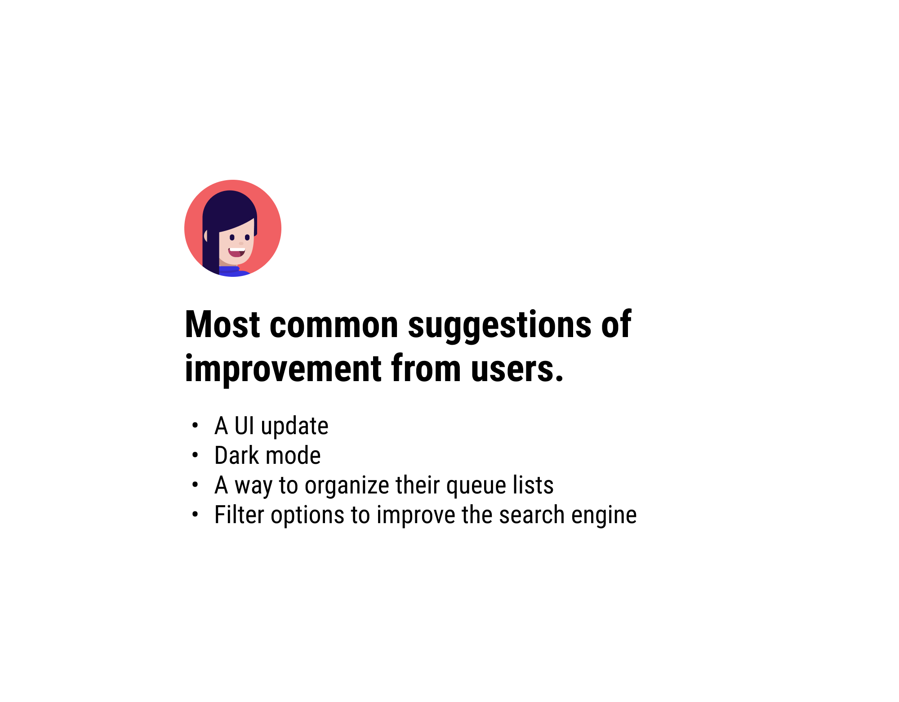
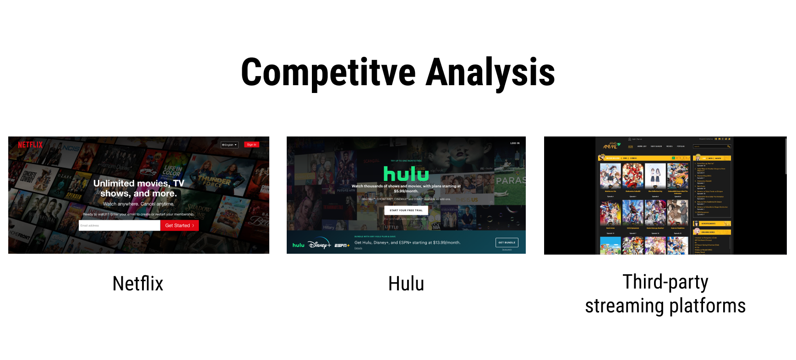

Redefining an enjoyable Anime experience
Crunchyroll is the leading online Anime streaming platform for western audiences. However, an outdated design system
is affecting the experience for those who want to get into Anime content.
I went through an extensive UX process to address pain points, improve Crunchyroll's website UI, the navigation experience,
and created a solution to organize playlists.
Project: Redesign
Timeline: August, 2020
Role: Research, user interviews, ideation, wireframing, Hi-fidelity design, usability testing
Software: Figma, Photoshop, Pen & paper
Defining the Problem
What's affecting the Crunchyroll experience?
I gathered feedback from Crunchyroll users to identify pain points. There was a prevelance with being unhappy with the outdated UI, as well as
frustration towards a lack of control on content playlists.
Research Breakdown
Learning from the Users
I conducted an online survey with 10+ responses as well as competitive analysis to see how Crunchyroll fares in the current market.


“Sometimes it takes a while to return where I left off.”
Survey response
“I do not like my watch queue rearranging by my last watched anime. I prefer to be in control of how my watch queue is ordered.”
Survey response
Ideation
Developing a visual strategy
My research results determined the landing page, shows list, queue list, and
series info page affected the user experience the most.
"Easier to use than what Crunchyroll has right now."
Tester feedback
"Smoother. Feels like Hulu."
Tester feedback
Conclusion
Reflection & Learnings
This project leveled up my UI design skills for web applications and my understanding of the UX process, especially UX research.
If I could go back, I would do more usability testing to maximize feedback on the proposed solutions.